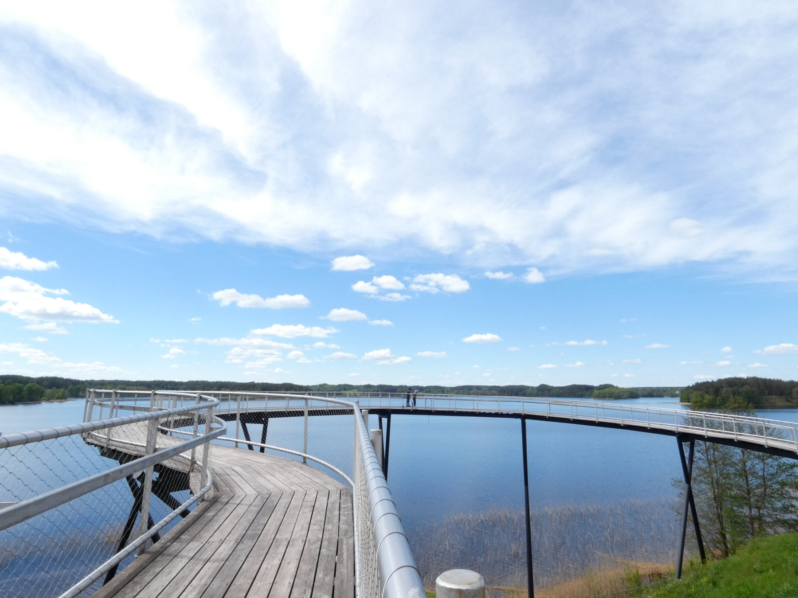
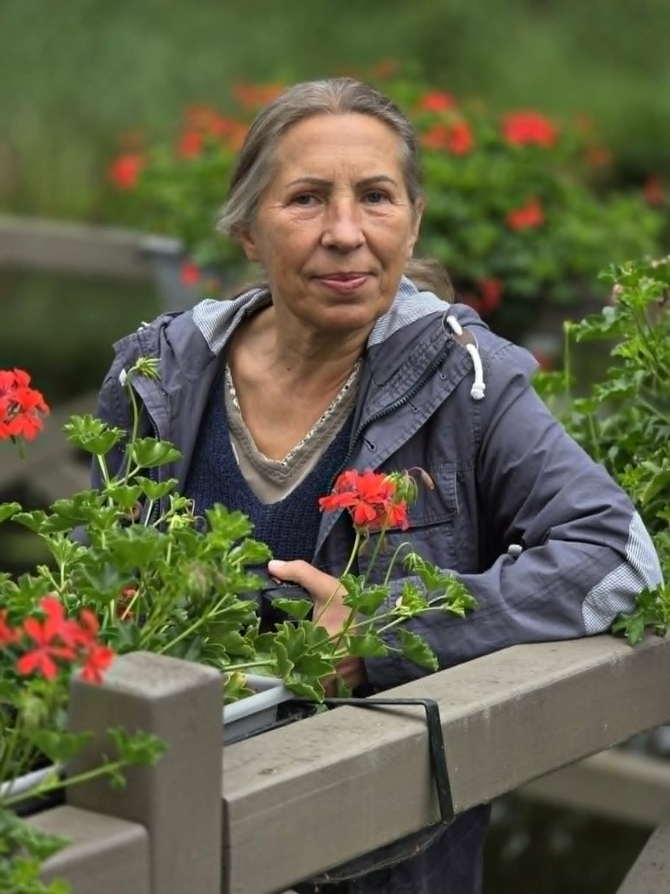
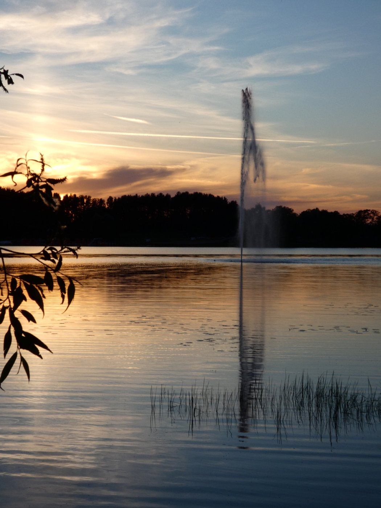
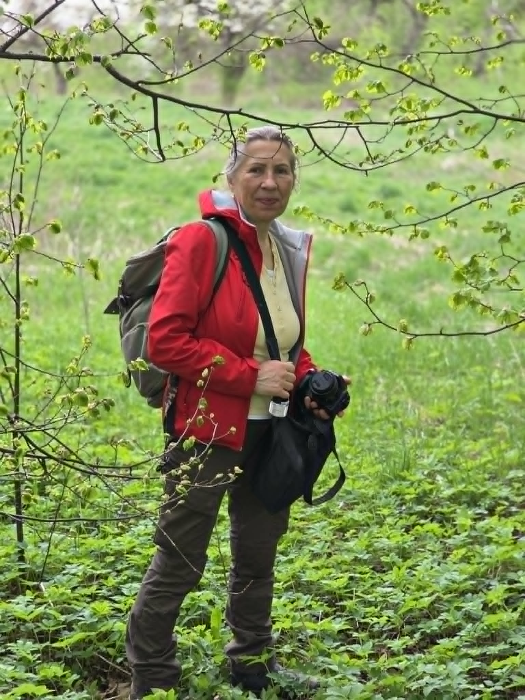
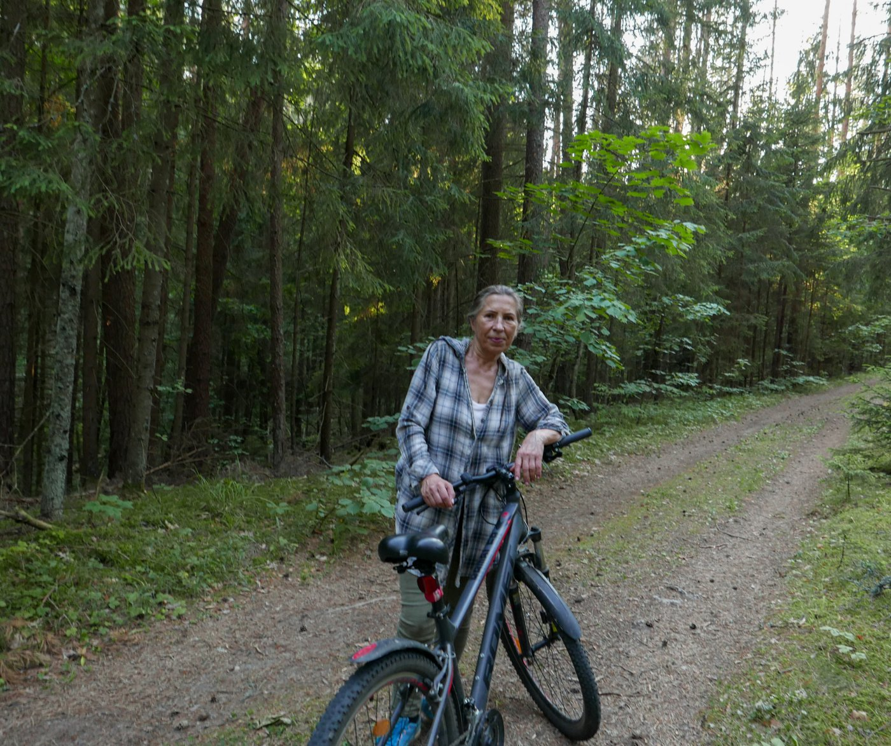

Pagalba planuojant viešnagę
Planuojate atvykti į Zarasų kraštą? Kreipkitės dėl pagalbos rengiant viešnagės planą.
Dėl galimybių ir sąlygų – skambinkite.
Gidės paslaugos Zarasuose
Ekskursijos, žygiai pėsčiomis ir dviračiais bei pasiplaukiojimai Zaraso ežere. Atraskite gamtą, vietos istorijas ir naujus įspūdžius.
Ieškantiems lėtesnio poilsio, gamtos grožio ir naujų žinių apie Zarasus.
Pasitarkime dėl Jūsų viešnagės Zarasų krašte.


Planuojate atvykti į Zarasų kraštą? Kreipkitės dėl pagalbos rengiant viešnagės planą.
Dėl galimybių ir sąlygų – skambinkite.
Gido paslaugos Zarasų mieste ir rajone, žygiai pėsčiomis ir dviračiais. Susipažinkite su Zarasų kraštu, jo gamta, istorija ir lankytinomis vietomis.
Kaina ir maršrutas derinami individualiai.
Zarasai ir Zarasų kraštas
Kviečiu pažinti Zarasų miestą ir rajoną kartu su manimi! Atraskime ežerų krašto gamtą, istoriją ir lankytinas vietas. Maršrutą pritaikysiu pagal Jūsų norus ir turimą laiką.
Šeimoms, draugų grupėms ir kolektyvams.
Kaina, trukmė ir maršrutas derinami individualiai.

Zaraso ežeras
Kviečiame pažinti Zarasus iš vandens! Organizuojame 2 valandų pasiplaukiojimus Zaraso ežere mažesniu arba didesniu laivu (katamaranu), kartu su gido paslaugomis.
Grupėms nuo 8 iki 25 žmonių.
15–20 € / žmogui
2 valandų pasiplaukiojimas, įskaitant gido paslaugas.

Zarasų krašto gamta
Kviečiu leistis į žygį pėsčiomis po Zarasų kraštą! Keliaudami grožėsimės gamta, pažinsime apylinkes ir jų istorijas. Maršrutą, atstumą ir ėjimo tempą suderinsime pagal Jūsų norus bei galimybes.
Šeimoms, draugų grupėms ir kolektyvams.
Kaina, trukmė ir maršrutas derinami individualiai.

Zarasų kraštas dviračiu
Kviečiu atrasti Zarasų kraštą keliaujant dviračiais! Grožėsimės apylinkių gamta, sustosime prie lankytinų vietų ir pasiklausysime krašto istorijų. Maršrutą, atstumą ir važiavimo tempą suderinsime pagal Jūsų norus bei galimybes.
Šeimoms, draugų grupėms ir kolektyvams.
Kaina, trukmė ir maršrutas derinami individualiai.
Susipažinkime
Esu gidė Zarasuose ir kviečiu Jus pažinti mano kraštą – jo ežerus, gamtą ir istorijas. Vedu ekskursijas Zarasų mieste ir rajone, žygius pėsčiomis bei dviračiais, organizuoju pasiplaukiojimus Zaraso ežere su gido paslaugomis.
Laukiu šeimų, draugų grupių, kolektyvų ir visų, norinčių atrasti Zarasų kraštą. Padėsiu suplanuoti viešnagę ir suderinti maršrutą pagal Jūsų norus.
Susisiekime: klimaityte@gmail.com
Telefonas: +370 616 33661
Jūsų įspūdžiai
Keliavote su manimi po Zarasų kraštą? Pasidalykite, kas įsiminė. Jūsų žodžiai padeda kitiems išsirinkti savo patirtį.
Labai puiki ekskursija
Norite pasidalyti savo įspūdžiais? Užpildykite šalia esančią formą arba parašykite klimaityte@gmail.com.
Paskambinkite ir aptarkime norimą ekskursiją, žygį ar pasiplaukiojimą. Galėsite pasiteirauti apie atstumus, kainą ir kitas sąlygas.